El MS-DOS nació en 1980, se desarrolló en 1981 y se lanzó en 1982 a partir de QDOS, siglas de Quick Disk Operating System o también conocido como 86-DOS.
Sus versiones principales fueron:
La versión MS-DOS 1.1 fue lanzada en 1982 y la versión MS-DOS 2.0 en 1983, ambas fueron publicadas por Microsoft el 25 de marzo de 2014 junto con el de Word para Windows 1.1, lanzado en 1989.
La versión 2.0 se lanzó en 1983 y se le añadieron nuevas características como tuberías, redirección de entrada y salida, subdirectorios, soporte para discos duros y unidades de disquete.
El MS-DOS contiene una serie de comandos internos, también llamados residentes, que cuando se carga el Sistema Operativo se transfieren a la memoria. También tiene comandos externos almacenados en archivos de comandos que tienen nombre propio y se pueden copiar de un disco a otro.
Estos son algunos comandos internos de MS-DOS:
CD o CHDIR - Cambia el directorio actual.
CD - Cambia al directorio jerárquicamente superior.
CLS - Limpia todos los comandos y toda la información que hay en pantalla excepto el incitador de comandos (prompt) usualmente la letra y ruta de la unidad usada (Por ejemplo C:\>)
COPY - Copiar un archivo de un directorio a otro COPY CON Copia a un archivo los caracteres introducidos en pantalla
DATE - Visualiza o cambia la fecha del sistema.
DEL - Se usa para eliminar archivos.
DIR - Lista los directorios y archivos de la unidad o directorio actual.
FOR - Repite un comando.
PROMPT- Cambia la línea de visualización de la orden.
MD o MKDIR - Crea un directorio.
REM - Permite insertar comentarios en archivos de proceso por lotes.
REN o RENAME - Renombra archivos y directorios.
SET - Asigna valores a variables de entorno.
TIME - Visualiza o cambia la hora del sistema.
TYPE - Muestra el contenido de un fichero. Se utiliza, principalmente, para ver contenidos de ficheros en formato texto.
VER - Muestra la versión del Sistema Operativo.
VOL - Muestra la etiqueta del disco duro y su volumen (si lo tiene)
BREAK -Activa o desactiva la verificación extendida CTRL+C.
ATTRIB - Sin parámetros visualiza los atributos de los directorios y archivos. Con parámetros cambia los atributos de directorios y archivos.
APPEND - Sirve para especificar trayectorias para ficheros de datos.
BACKUP - Ejecuta una copia de seguridad de uno o más archivos de un disco duro a un disquete.
CHKDSK - Verifica si hay errores en el disco duro.
DELTREE - Borra un directorio sin importar que contenga subdirectorios con todos sus contenidos.
DISKCOMP - Tras realizar una copia de disquetes podemos realizar una verificación, para ver si ha copiado todos los contenidos, comparando. Este comando compara discos o disquetes.
DISKCOPY - Permite hacer una copia idéntica de un disquete a otro, pertenece al grupo de las órdenes externas.
DOSKEY - Permite mantener residentes en memoria RAM las órdenes que han sido ejecutadas en el punto indicativo.
FC - Compara ficheros.
FORMAT - Permite crear la estructura lógica en una unidad física de almacenamiento (discos duros, disquetes y unidades de almacenamiento masivo).
FORMAT /U - Formatea un disco con formato incondicional reparando errores y marcando sectores defectuosos.
FORMAT /s - Formatea un disco y lo convierte en disco de sistema.
PRINT - Permite imprimir ficheros.
También se pueden utilizar estos parámetros combinados.
KEYB - Establece el idioma del teclado según el parámetro adicionado.
LABEL - Muestra o cambia la etiqueta de la unidad de disco duro.
MEM - Muestra la memoria RAM, el espacio ocupado y el espacio libre.
MOVE - Mueve o cambia de posición un directorio y/o ficheros. También renombra subdirectorios.
SUBST - Crea una unidad lógica virtual a partir de un directorio.
TREE - Muestra los directorios en forma de árbol.
XCOPY - Este comando tiene la misma función que su homólogo residente COPY, con la salvedad de que realiza operaciones de copiado de toda la estructura de directorios si se utiliza el carácter comodín *.* y el modificador /s. Es una versión mejorada del anterior. [ref COMANDOS EXTERNOS https://es.wikipedia.org/wiki/MS-DOS]
Imágen de MS-DOS
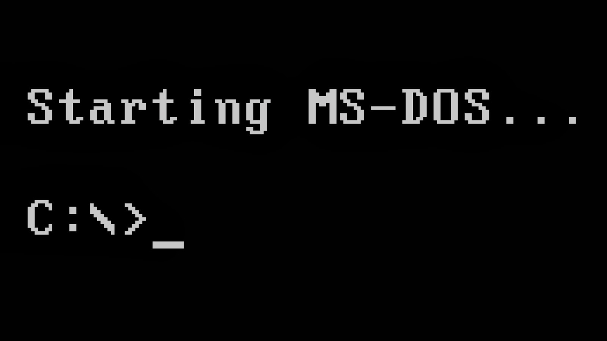
Foto representativa de MS-DOS
WINDOWS 1.0
Windows 1.0, primera versión de Windows cuyo lanzamiento fue en el año 1985; incluía aplicaciones que no llamaron la atención de los usuarios y las denominaron aplicaciones de "juguete". No tuvo éxito y estaba limitada por Apple.
Incluía un bloc de notas, una terminal de computadora, portapapeles y un controlador de RAM, un programa de pintura de gráficos, procesador de texto, archivador de tarjetas, calendarios de citas, un panel de control y un reloj.
Imágen de WINDOWS 1.0
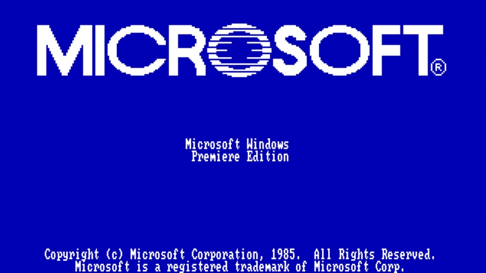
Foto representativa de WINDOWS 1.0
WINDOWS 2.0
Más adelante, en diciembre de 1987, salió la segunda versión, Windows 2.0. Fue más popular que la primera, sobre todo por la nueva forma de versión run-time de las aplicaciones, además de permitir que las ventanas de aplicación se superpusieran entre sí por primera vez y se introdujesen el soporte de gráficos a color VGA.
Imágen de WINDOWS 2.0
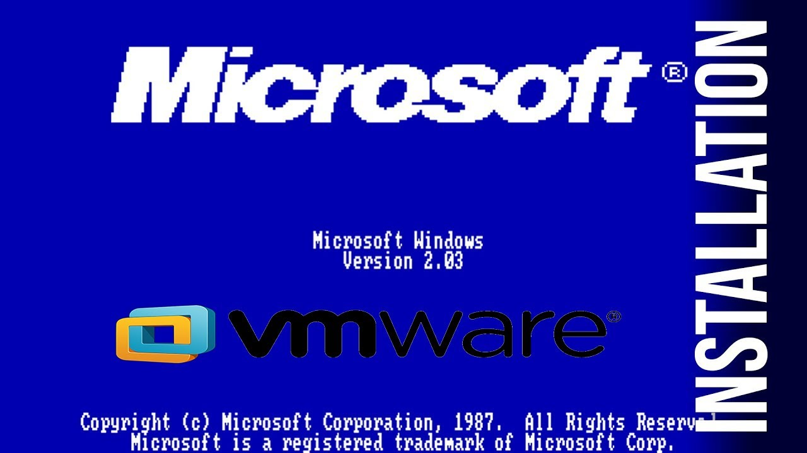
Foto representativa de WINDOWS 2.0
WINDOWS 3.0
En mayo de 1990 se lanzó la primera versión que se hizo popular, Windows 3.0, que contenía las mejoradas gráficas y microprocesadores de la época, una memoria virtual, una mejorada interfaz de usuario y la posibilidad de ejecutarse en modos mejorados reales, estándar, o 386.
Recibió dos actualizaciones:
La primera fue Windows 3.0a, lanzado en diciembre de 1990. Se lanzó como una versión de mantenimiento e incluyó la posibilidad de mover cantidades de datos superiores a 64 KBse y mejoró la estabilidad reduciendo los errores asociados con la red, la impresión y las condiciones de poca memoria.
Más adelante, en octubre de 1991 fue lanzada la segunda actualización, Windows 3.0 con Extensiones Multimedia. Era compatible con cualquier procesador Intel y fue la primera versión de Windows en ejecutar programas en modo protegido. Esta actualización se basó en Windows 3.0a y se lanzó para soportar tarjetas de sonido y unidades de CD-ROM. Se le añadió un soporte multimedia para la entrada y salida de audio, un transmisor de medios, el reproductor de CD, un reloj nuevo, un formato de ayuda mejorado y salvapantallas. Todas estas características serían incluidas posteriormente en Windows 3.1.
Imágen de WINDOWS 3.0
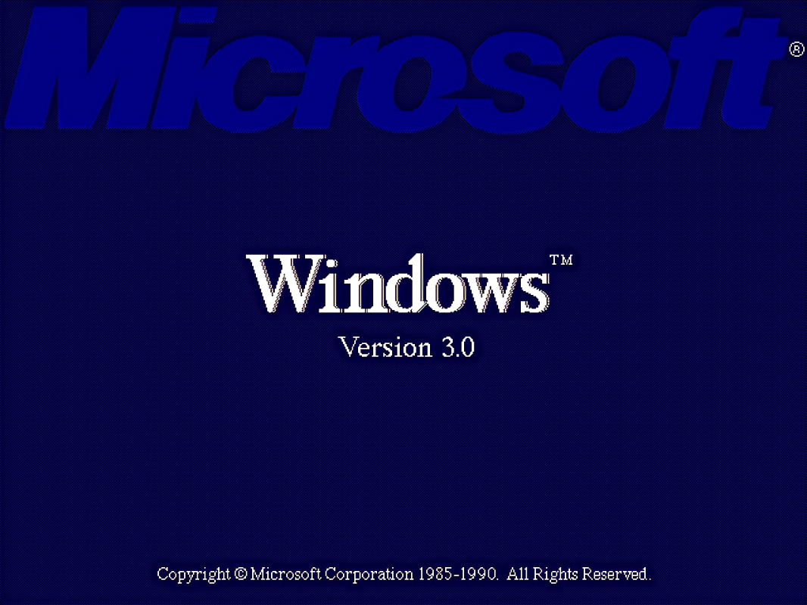
Foto representativa de WINDOWS 3.0
WINDOWS 3.1
Windows 3.1 fue lanzado en abril de 1992. Tenía muchas mejoras y logró vender aproximadamente 3 millones de copias, incluidas las actualizaciones procedentes de Windows 3.0.
Marcó el nacimiento del PC multimedia porque añadió extensiones multimedia para soportar tarjetas de sonido, MIDI, audio CD y el puerto Super VGA.
Se vendieron cerca de 10 millones de copias de Windows 3.1 y gracias a ello se convirtieron en el sistema operativo más vendido de la historia.
Este sistema se trataba de una respuesta a Mac, ya que la interfaz era muy parecida. Por ello Apple decidió demandar a Microsoft por copyright, aunque perdió el juicio.
Mejoró la velocidad del módem y redificó el concepto OLE, lo que nosotros conocemos como "copiar y pegar".
Imágen de WINDOWS 3.1
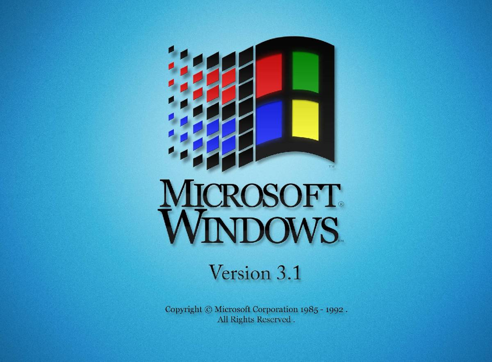
Foto representativa de WINDOWS 3.1
WINDOWS NT
Fue lanzada el 27 de julio de 1993 y para su desarrollo reclutaron a Dave Cutler, jefe analista de VMS en DEC, con el fin de mejorar NT y hacerlo más competitivo. Se diseñó para estaciones de trabajo avanzadas y para servidores. En esta versión uno de los objetivos principales fue poner como prioridad crear un núcleo que fuese capaz de evolucionar facilmente.
NT está diseñado para ser independiente del hardware. Está basado en un micronúcleo, soporte de red incorporado, soporte multiprocesador, y seguridad C2, soporte para sistemas de archivos FAT, NTFS y HPFS, y un direccionamiento de hasta 4GB de RAM.
Windows NT tuvo problemas de compatibilidad con el hardware y el software que ya existían, necesitaron muchos recursos para desarrollarla y por ello solo estuvo disponible en equipos grandes. Por otro lado, un dato interesante antes de pasar a la siguiente versión es que su interfaz gráfica estuvo basada en la de Windows 3.1.
Imágen de WINDOWS NT
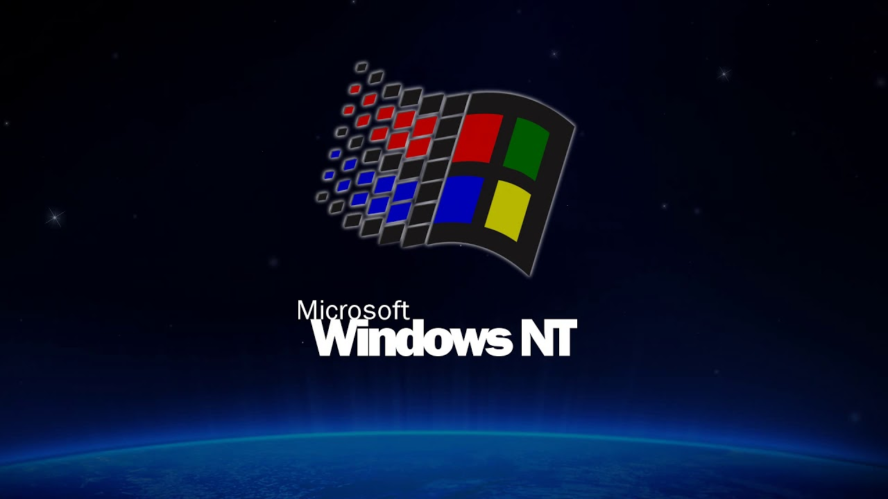
Foto representativa de WINDOWS NT
WINDOWS NT 3.1
Fue lanzada junto a Windows NT por ser su primera versión, el 27 de julio de 1993 con el fin de servir para la realización de trabajo y para los servidores de negocios. Fue desarrollada tras la aparición del sistema operativo OS/2 2.0 por IBM y es la primera versión de la rama Windows NT
Imágen de WINDOWS NT 3.1
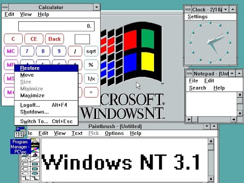
Foto representativa de WINDOWS NT 3.1
WINDOWS 3.11
Más adelante, el 31 de diciembre de 1993, se lanzó Windows 3.11. Esta versión se trataba de una actualización mejorada de Windows 3.1 que solucionó muchos de sus bugs. Se le conoce como Windows para trabajo en grupo. De hecho Microsoft optó por sustituir todas las versiones de Windows 3.1 por la de Windows 3.11 con el fin de que los nuevos usuarios adquiriesen el sistema operativo con los bugs arreglados y aquellos usuarios que tenían Windows 3.1 recibieron la actualización de Windows 3.11 de forma gratuita.
Imágen de WINDOWS 3.11
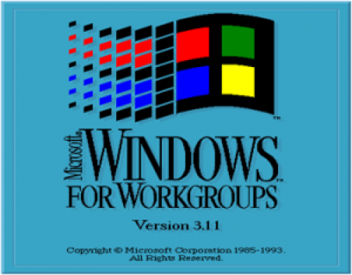
Foto representativa de WINDOWS 3.11
WINDOWS NT 3.5/3.51
Su interfaz gráfica fue la misma que la de Windows NT 3.1 y Windows 3.1 y los usuarios de Windows evaluaron la nueva interfaz gráfica. Esta iba a ser presentada en Windows 95 y NT 4.0, pero finalmente lo hizo Windows NT 3.5.
Imágen de WINDOWS NT 3.5/3.51
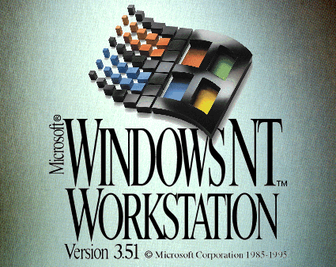
Foto representativa de WINDOWS NT 3.5/3.51
WINDOWS 95
Windows 95 fue lanzado el 24 de agosto de 1995 y tenía dos grandes ventajas, la primera era tener una instalación integrada que le hizo mostrarse como un solo sistema operativo y que gracias a ello no necesitabas comprar el MS-DOS . Por otro lado contaba con un subsistema en modo protegido que impedía que las nuevas aplicaciones Win32 dañasen la memoria de otras aplicaciones Win32. Windows 95 se acercó más a Windows NT, pero compartió código de Windows 3.x, incluía soporte para la tecnología Plug & Play y fue el primer gran éxito mundial de los de Redmond. En octubre de 1998 lanzaron una versión compatible para USB.
Imágen de WINDOWS 95
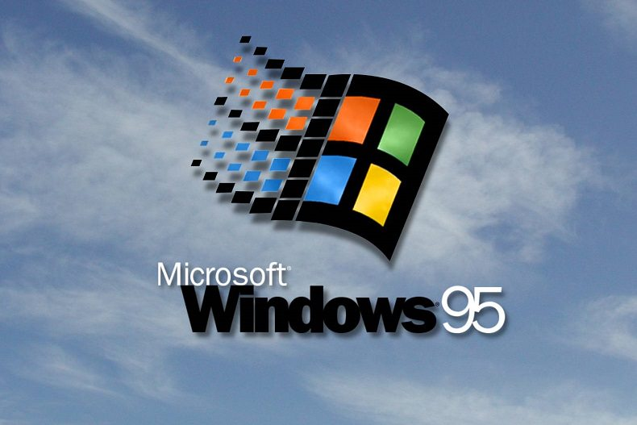
Foto representativa de WINDOWS 95
WINDOWS NT 4.0
Esta versión de Windows, lanzada en 1996, tenía diferentes componentes tecnológicos para diferentes plataformas. Gracias a que contaba con diferentes versiones pudieron adaptarlo según las necesidades que tenían. Usaba componentes como tarjetas de sonido, módems y otros, diseñados específicamente para este sistema operativo.
Imágen de WINDOWS NT 4.0
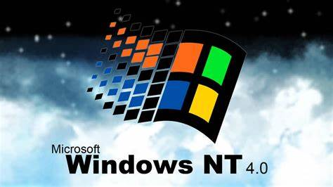
Foto representativa de WINDOWS NT 4.0
WINDOWS 98
Fue lanzado el 25 de junio de 1998. Incluía nuevos controladores de hardware, el sistema de ficheros FAT32, soportaba particiones mayores a los 2 GiB permitidos por Windows 95, integraron Internet Explorer, modificaron su núcleo para permitir el uso de controladores de Windows NT en Windows 9x y de igual forma al revés lo que permitió la reducción de costes de producción.
Imágen de WINDOWS 98Foto representativa de WINDOWS 98
WINDOWS 98 SECOND EDITION
Fue lanzado el 5 de mayo de 1999. Tenía la capacidad de compartir conexión a Internet a través de una sola línea telefónica entre varios equipos y eliminó la mayoría de los errores producidos por Internet Explorer en el sistema. Es la más estable de todas de ellas y aún está usándose en muchos equipos.
Imágen de WINDOWS 98 SECOND EDITION
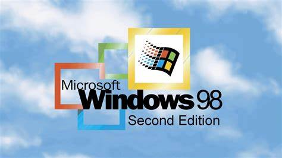
Foto representativa de WINDOWS 98 SECOND EDITION
WINDOWS MILLENIUM EDITION
Windows Millenium Edition, también conocido como Windows ME, fue una copia de Windows 98 pero con un mayor número de aplicaciones. Windows ME fue un proyecto de un año lanzado el 14 de septiembre de 2000 cuya función era rellenar de forma rápida el hueco entre Windows 98 y el nuevo Windows XP.
Tenía poca estabilidad e incluía algunas mejoras para el usuario, como tipos de letra y distribuciones de teclado incluyendo el símbolo de Euros, pero no contaba con una unidad de proceso de 16 bits y por ello se centró únicamente en la compatibilidad con el nuevo hardware de 32 bits.
Imágen de WINDOWS Millenium Edition
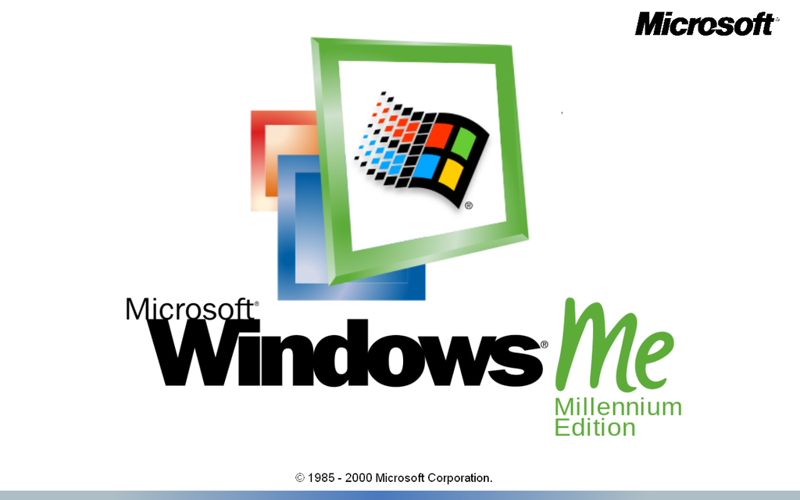
Foto representativa de WINDOWS Millenium Edition
WINDOWS 2000
Esta versión fue el sustituto de Windows NT 5.0. Se lanzó el 17 de febrero de 2000 y fue muy útil para los administradores de sistemas. Tenía una gran cantidad de servicios de red, admitía dispositivos Plug&Play, incorporó importantes innovaciones tecnológicas en los nuevos y en los actuales servicios.
Imágen de WINDOWS 2000
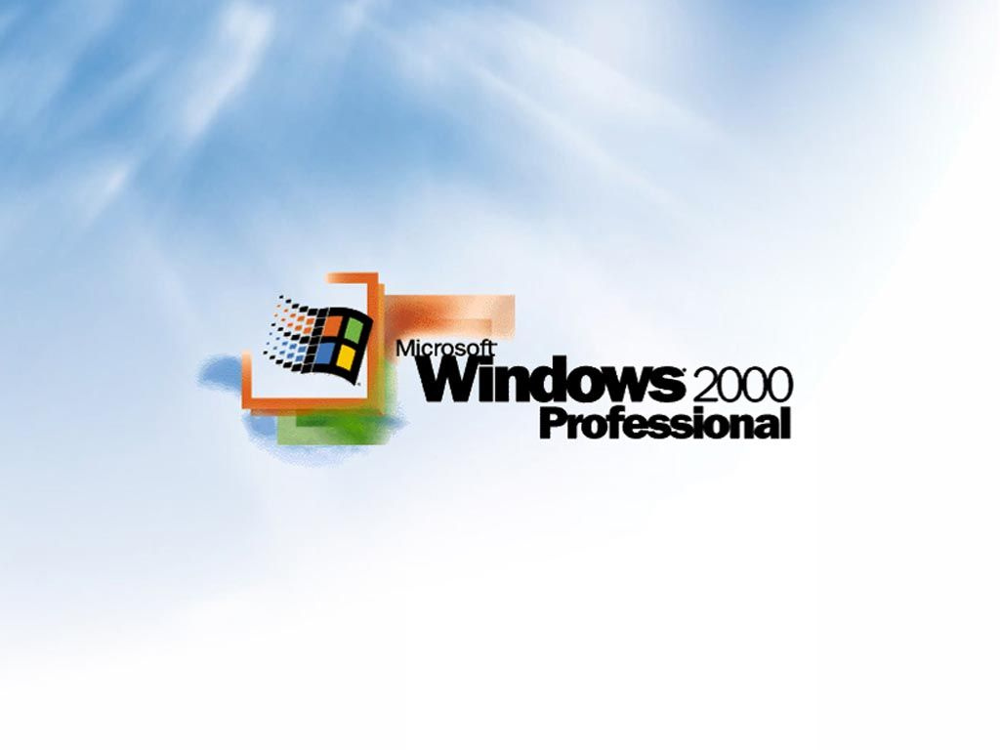
Foto representativa de WINDOWS 2000
WINDOWS XP
Fue puesto en venta en el 2001 en sus ediciones Home y Professional. Usa el núcleo de Windows NT 5.1, tiene una nueva interfaz, una mayor capacidad multimedia, dispone de multitarea mejorada, soporte para redes inalámbricas y asistencia remota. XP da un avance con la versión Media Center que ofrecía una interfaz de acceso fácil con todo lo relacionado con multimedia como la TV, fotos, etc.
Imágen de WINDOWS XP
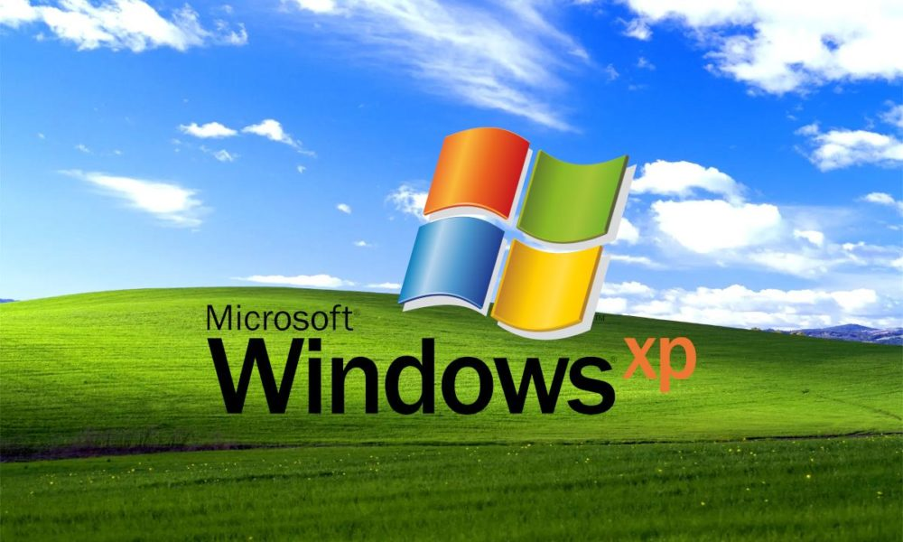
Foto representativa de WINDOWS XP
WINDOWS SERVER 2003
Esta versión fue lanzada en 2003 para servidores basada en el núcleo de Windows XP, al que se le han añadido servicios y bloqueado algunas de sus características para mejorar el rendimiento.
Imágen de WINDOWS SERVER 2003
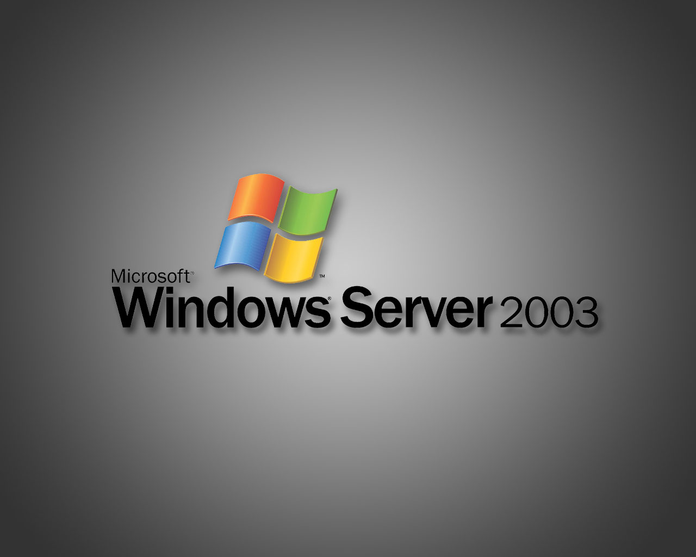
Foto representativa de WINDOWS SERVER 2003
WINDOWS FUNDAMENTALS FOR LEGACY PCS
Fue una versión de cliente ligero de Windows XP Service Pack 2 lanzado el 8 de julio de 2006.
Solo está disponible para los clientes de Software Assurance.y su objetivo es dar a las empresas una opción de actualización decente de los equipos más antiguos que ejecutan Windows 95, 98, y ME, apoyados con parches y actualizaciones.
Imágen de WINDOWS FUNDAMENTALS FOR LEGACY PCS
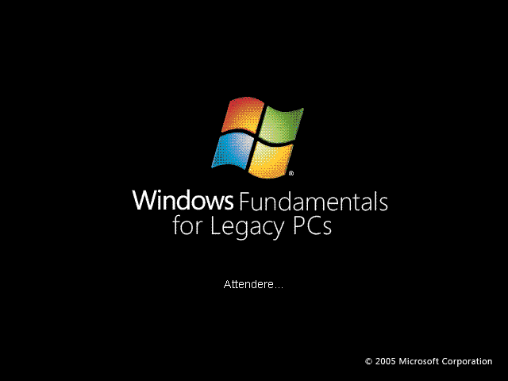
Foto representativa de WINDOWS FUNDAMENTALS FOR LEGACY PCS
WINDOWS HOME SERVER
Fue anunciado el 7 de enero de 2007 en el núcleo Windows NT 6.0, tiene una media compartida, local y remota unidad backup y duplicación de archivo, es un producto de servidor basado en Windows Server 2003, diseñado para el uso de los consumidores. Se puede configurar y controlar mediante un programa de consola.
Imágen de WINDOWS HOME SERVER
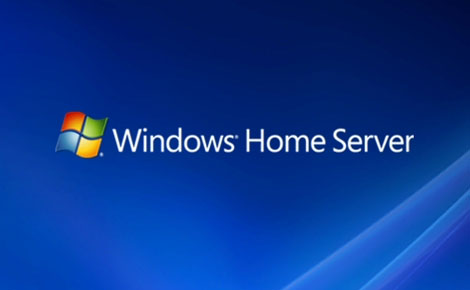
Foto representativa de WINDOWS HOME SERVER
WINDOWS VISTA
Esta versión apareció en el mercado el 30 de enero de 2007, trae una nueva interfaz gráfica llamada Windows Aero e incluyó muchas aplicaciones nuevas y características en el panel de control, las configuraciones y los programas del sistema.
Imágen de WINDOWS VISTA
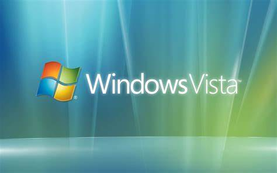
Foto representativa de WINDOWS VISTA
WINDOWS SERVER 2008
Es el sucesor de Windows Server 2003 y fue lanzado el 12 de noviembre de 2008. Al igual que Windows Vista, Windows Server 2008 se basa en el núcleo Windows NT 6.0 y tiene 10 ediciones. Tiene una segunda versión llamada Windows Server 2008 R2.
Imágen de WINDOWS SERVER 2008Foto representativa de WINDOWS SERVER 2008
WINDOWS 7
Es el sucesor de Windows Vista, tiene un núcleo Windows NT 6.1. Su desarrollo fue planeado para que tuviese una duración de tres años de plazo y fue lanzado el 22 de octubre de 2009. Tiene el arranque más rápido, control de cuentas de usuario menos molesto, ventana Multi-touch, mejor administración, redes Grupo Hogar, mejor administración de energía para notebooks y cambios en la interfaz Aero.
Imágen de WINDOWS 7
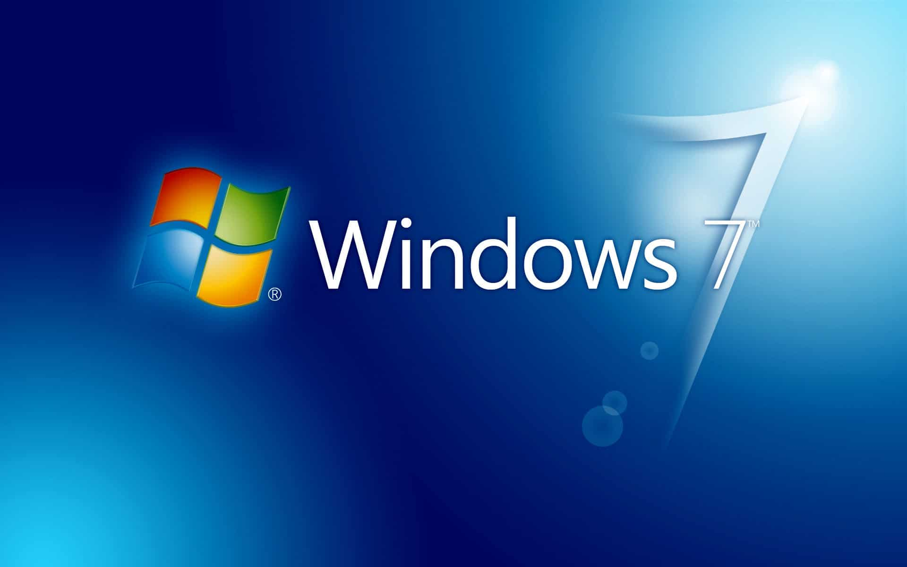
Foto representativa de WINDOWS 7
WINDOWS 8
Fue lanzada en 2012 como el sucesor de Windows 7, se diseñó de tal forma para que todas las plataformas de Microsoft pudiesen funcionar en él. Tiene los lenguajes HTML5 y JavaScript, y contiene el navegador Internet Explorer 10. Tiene un núcleo Windows NT 6.2, una nueva interfaz Modern UI, Pantalla de Inicio con nuevas aplicaciones, Explorador de Windows rediseñado, administrador de tareas con más opciones y la aplicación Windows Defender como antivirus.
Imágen de WINDOWS 8
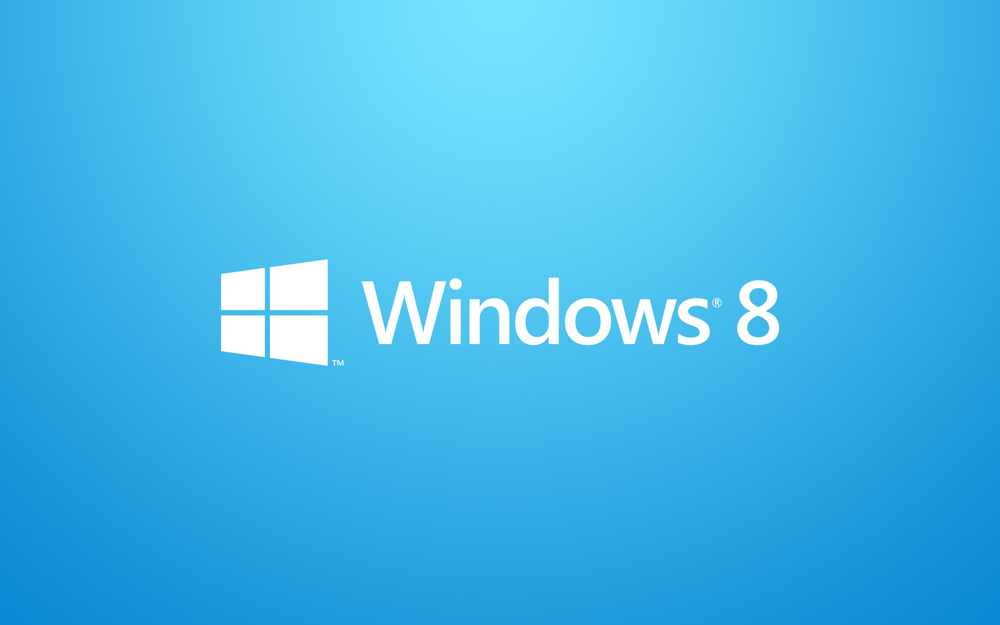
Foto representativa de WINDOWS 8
WINDOWS 8.1
Fue lanzado el 17 de octubre de 2013, tenía mejoras del rendimiento, aplicaciones y un botón para la Pantalla de Inicio. Esta versión incluyó ciertos Updates con mejoras gráficas, de interfaz, de rendimiento y de velocidad.
Windows 10 es un sistema operativo desarrollado por Microsoft, formando parte de la familia de sistemas operativos NT. La cual la primera versión fue publicada en 1993. Su descarga estuvo de manera gratuita desde su fecha de lanzamiento para las personas que ya tuvieran una copia de windows 7 u 8.1 y así instar a las personas para actualizar su versión de Windows.
La fecha en la que fue lanzada esta versión del sistema operativo fue el 29 de julio de 2015 e introdujo una arquitectura de aplicaciones universales. Además se desarrolló con la interfaz Continuum y finalmente con Fluent Design. Dichas aplicaciones podrían ser desarrolladas para ser ejecutadas en todos los productos de microsoft al tener un código casi idéntico haciendo que, por ejemplo, pudieran correr en tablets, ordenadores personales, smartphones e incluso en Xbox. La interfaz que nos ofrece este sistema operativo fue creada con el propósito de realizar conexiones entre una interfaz con teclado y ratón y una interfaz guiada por pantalla táctil. El menú de inicio es prácticamente idéntico mezclando el diseño de Windows 7 y el de Windows 8. Se introduce por primera vez el navegador web Microsoft Edge, el cual es el sucesor directo de internet explorer. También se añadió una vista de tareas y un sistema de escritorio virtual, el cual nos permite acceder a nuestro escritorio de manera remota desde otros dispositivos como un portatil, pc, tablet o smartphone. Además se introduce un soporte integrado para iniciar sesion a través de huella digital o reconocimiento facial el cual fue llamado Windows Hello. En apartado gráfico también obtuvimos nuevas mejoras y caracteristicas introduciendo DirectX12 y WDDM 2.0 y así mejorar el rendimiento en videojuegos. Finalmente también se añadió características nuevas de seguridad para entornos empresariales.
Características
Una de las características a destacar en Windows 10 es que se arreglaron las deficiencias en la Interfaz de Usuario de Windows 8, windows 8.1 phone. E introdujeron el cross-buy, el cual si adquieres una licencia de una aplicación, podrás usarla en cualquier dispositivo compatible en vez de aplicarse a solamente el dispositivo de origen.
UI y escritorio
Hemos mencionado que mejoró los problemas que ocasionó la interfaz de usuario(UI) de windows 8. Esto se debía a que en windows 8 no había distinción alguna entre dispositivos táctiles y pc, haciendo que la interfaz se encontrara rara. En Windows 10 se implementó dicha UI de manera que se adaptara al dispositivo en el que estuviera ejecutandose dicho sistema operativo, ofreciendo un modo tablet que está optimizado para el uso de pantallas táctiles y otro para teclado y ratón. El usuario puede elegir entre la posibilidad de alternar entre los dos modos en el momento que desee.
Sistema y seguridad
En el tema relativo a la seguridad, se incorpora tecnología de autenticación. Así que en algunos dispositivos con cámaras que requieran infrarrojos permiten el incio de sesión a través de reconocimiento facial el cual es bastante similar al funcionamiento de Kinect de xbox. Además de también incorporar una función para el inicio de sesión en los dispositivos con en los que se pueda acceder mediante huella digital.
En el ámbito empresarial se añade características de seguridad adicionales como cifrado de datos automático y la posibilidad de bloquear las solicitudes de acceso a datos cifrados.
El método de las funciones “actualizar y restaurar sistema” cambian un poco con el paso de utilizar una ejecución distinto, pasando a ejecutar archivos en una partición de recuperación totalmente independiente, logrando de esta manera el alojamiento permamente de parches que instalemos después de la operación y así ahorrar tiempo en futuras instalaciones o actualizaciones.
Internet y funcionalidad
Se intoduce el navegador web microsoft edge, el cual es el predeterminado en microsoft, desbancando al ya clásico internet explorer.
Además se añade Cortana, el asistente virtual de microsoft el cual ya se vio por primera vez en windows 8.1 phone. Cortana reemplaza la búsqueda integrada añadiendo un soporte de entrada de voz. Se añade también la posibilidad de búsqueda de archivos, aplicaciones, envío de correos etc...
Multimedia y juegos
Windows 10 añade una integración mayor en el ecosistema Xbox donde nos permite navegar por una amplia biblioteca de juegos tanto de pc como de de la consola de la compañía. Además ofrece el Game DVR con el que podemos guardar los últimos 10 segundos del juego al que estemos jugando en un archivo de video para poder compartirlo. También podríamos controlar un juego desde una Xbox one si estamos en una red local.
Ediciones
A la hora de elegir qué versión de Windows 10 tenemos cuatro ediciones principales. Disponemos de windows 10 home que es básicamente una versión para los usuarios del hogar, gente que no necesita exprimir demasiado el sistema operativo. Por otra parte tenemos la versión Pro, que añade características adicionales y está dirigido a empresas y aficionados. Dos ediciones más, como Enterprise y Education que están destinadas a entornos empresariales y educativos, además solo están disponibles mediante una clave de activación de producto específica.
Además se planea lanzar nuevamente Windows Phone esta vez llamado Windows 10 mobile y es como una versión de Windows10 para teléfonos inteligentes. Todo en base a una estrategia de unificación y compatibilidad
Requisitos del sistema
Componente
Mínimo
Recomendado
Procesador
x86 o x64 1GHz o más
x64 de 2GHz o más
RAM
32 bits 1GB, 64 bits 2GB
64 bits 4 GB o más
Tarjeta gráfica
Dispositivo gráfico con DirectX 9 WDDM 1.0 o más reciente
Pantalla
800×600 pixeles
1366x768 pixeles
Dispositivo de entrada
Teclado y ratón
Espacio en disco
32 Bits 16GB, 64 Bits 20GB
64GB en general
Windows 11
Introducción
El lanzamiento inicial de Windows 11 se produjo el 5 de octubre de 2021 y como ocurrió con Windows 10, los usuarios se pueden actualizargratuitamente a esta versión si tienen la Windows 10 o comprar una licencia.
[1]
El problema radicó en los requisitos mínimos del sistema operativo, que impide su instalación a los equipos con unos pocos años de antigüedad, yen plena crisis de los semiconductores. Su andadura se inicia de la mejor forma posible. Por otra parte, es irónico ver como no soportaprocesadores Intel i con unos seis años de antigüedad y en cambio continúa dando soporte a una tecnología obsoleta y que casi nadie utiliza comodisquetes de 5,25”. Sinceramente, con este tipo de prácticas considero que intentan obligar a los usuarios que no se han comprado un Pc en losúltimos cinco o seis años a hacer un cambio y un gasto de dinero que en muchas ocasiones es innecesario.
[2]
Por suerte podemos utilizar Rufus para crear un usb arrancable e instalarlo saltándonos todas estas restricciones innecesarias. En el caso deWindows 10, lo activa automáticamente y nos evita tener que comprar una licencia, desconozco si tiene la misma capacidad con Windows 11. [3]
Requisitos
Los más importantes son:
Procesador: 1Ghz o más rápido con dos nucleos de 64 bits.
Ram: 4GB.
Almacenamiento: 64GB
Firmware: Uefi con arranque seguro → El primer problema en el camino para su expansión.
TPM: Un módulo de plataforma segura → El segundo problema dejando obsoletos a los ordenadores con núcleos Intel de séptima generación yanteriores y encareciendo los módulos TPM instalables en la placa base. La última vez que lo miré, había subido de unos €20 a más de€100.
Tarjeta Gráfica: Compatible con directx12 o posterior con controlador WDDM 2.0.
Pantalla: Necesitarás una pantalla de un mínimo de 9 pulgadas en diagonal, con 720p de alta definición, y canal de 8 bits por color.
Otros: Vas a necesitar tener una cuenta de Microsoft, y necesitarás estar conectado a Internet para la configuración inicial y cualquieractualización.
Como todos los Windows posteriores a Windows xp, usa un nucleo híbrido NT, en este caso la versión 10.0. Es totalmente instalable en equipos conprocesadores de CISC 64Bits y ARM y presenta una interfaz gráfica llamada de Microsoft Fluent Design, la misma que su predecesor. Con el fin deactualizarse hace uso del Windows Update.
[5]
Si no se dispone de una copia anterior de Windows o no se desea comprar ninguna key, se puede utilizar completamente como ocurría con la versiónanterior y disponiendo de las últimas actualizaciones (sin activarlo). Eso sí, todo el tema de la personalización estarán bloqueados como cambiarel fondo de pantalla y asuntos semejantes de menor importancia.
Otro punto importante a tener en cuenta es que no permite instalar aplicaciones fuera de la Windows Store, salvo que se realicen una serie decambios en la bios.
Nuevas características
Nuevo menú de inicio. Ahora la barra de tareas se coloca en el centro, aunque es algo configurable. El menú también cambia y elimina lasbaldosas para mostrar un diseño más limpio, elegante y minimalista. Como no puede ser de otra manera, existe una opción para ver todas lasaplicaciones instaladas. En mi opinión este menú de inicio es una de los mejores cambios que han hecho.
En principio es compatible con aplicaciones android, estando integradas en la “prestigiosa” Windows Store. Creo que todavía no está disponible.
En principio es compatible con aplicaciones android, estando integradas en la “prestigiosa” Windows Store. Creo que todavía no está disponible
Nueva aplicación de captura de pantalla, o mejor dicho, es lo mismo pero con una presentación nueva para ir acorde con el nuevo aspecto delsistema.
Bordes redondeados. Le sienta bastante bien.
Cambios en los menús flotantes, básicamente, han redondeado también sus bordes.
Personalización de los escritorios virtuales.
Explorador modificado para acompañar al diseño general, nada especialmente reseñable.
Iconos renovados, bastantes bonitos, pero muy similares a los de Windows 10. Es posible que no sea capaz de captar con plenitud sus sutilesdiferencias.
Nuevas fuentes por defecto, utilizarán una nueva en Microsoft Office después de 15 años usando la misma (Calibri). Un cambio menor y de escasaimportancia.
Tiene un modo oscuro y uno claro, como casi todos los sistemas operativos actuales. Y se puede activar transparencias.
Creo que la pobre Cortana de Halo ha desaparecido o al menos la han escondido muy bien para que no moleste, lo agradezco.
Una cosa muy útil es la posibilidad de habilitar fácilmente el dictado por voz.
Igual que su predecesor dispone de un modo Dios, sintetizando, no deja de ser una carpeta desde la que poder acceder a un menú oculto contodas las opciones de Windows.
Han embellecido la CMD o PowerShell, tiene un toque minimalista.
Protección WIP (Windows Information Protection): Se trata de una protección adicional a las aplicaciones y datos que evita fugas dedatos de propiedad intelectual u otra índole.
asignado: Esto permite que, según el usuario, se puedan ejecutar distintas apps y se mantengan identidades separadas y seguras.
Roaming con Azure: Permite el roaming con una licencia Azure AD Premium. Así, se consigue reducir el tiempo de configuración de unnuevo dispositivo.
Windows Server: Se puede administrar un conjunto de PCs, cuentas de usuarios o grupos para obtener acceso a ciertos archivos oimpresoras.
MDM: Se trata de la gestión de dispositivos móviles con el objetivo de administrar la nube a nuestro modo.
Windows Update para empresas: Ofrece un servicio diferencial y permite reducir el coste de tener que actualizar todos los equipos yestar al tanto de esto.